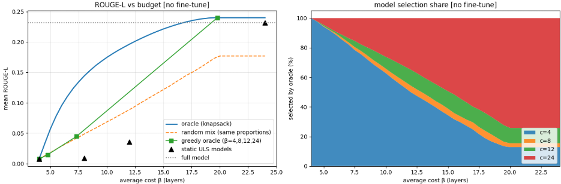
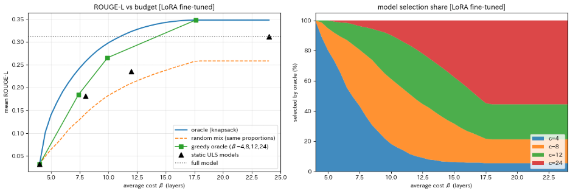
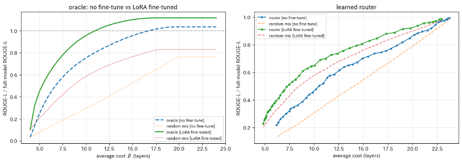

先日紹介した Dynamic Layer Selection in Decoder-Only Transformers で提案されている "質問ごとに計算の深さを使い分けると、同じ計算量でかなり良い結果が出せる" という結果が確認できるかについて実験の上確認していきます。
今回実験の意義は、論文が提示する『動的レイヤ選択』の効果が、縮小版の設定でも本物かどうかを、オラクルという上限値を手がかりに検証する 点にあります。
論文は「OPT-1.3B を Alpaca で6エポックフル微調整し、オラクルによる動的レイヤ選択で平均5.6層（23.3%）でフルモデルと同等の ROUGE-L に到達した」と報告しています。
今回実験は、その絶対値を再現することを目標としていません。以下の問いを検証することを実験目的とします。
| 問い | この実験で確認したこと |
|---|---|
| オラクルと静的モデルの差は本物か？ | β=8 で oracle が静的 c=8 を +0.075（約4割）上回ることを確認 |
| その差は「ノイズの事後利用」だけか？ | greedy oracle と静的がほぼ同じ（0.184 vs 0.182）なので、sampling advantage だけでは説明できない |
| 混合そのものに意味があるか？ | random mix が静的を下回るため、「混ぜるだけ」ではなく系列ごとの配分が重要 |
論文のオラクルは、テストの正解スコアを見て最適な深さを選ぶため、実用可能な制御器ではなく「理論上の上限」 です。実験記録でもこの点を明確に認識しています。
「オラクルはテスト用の正解 ROUGE を使うので、ばらつきのなかから良い出力を選べてしまう」
今回の実験では、greedy oracle と random mix を対照実験として導入することで、オラクルの数字を以下のように分解しました。
この構造により、「配分効果そのもの」 を切り出すことが出来るはずです。
プロンプトの埋め込みから各深さの ROUGE-L を予測する軽量ルーター（Ridge 回帰）を学習し、オラクル・random mix と比較しています。
これは、「オラクルは上限だが、どこまで実用化できるか」 という問いに直接対応する実験です。
今回実験は、オラクルという「理想値」と実用化の間のギャップを測る第一歩として意義があります。
この実験は、AI（大規模言語モデル）の計算を、入力に応じて賢く減らせるのか を調べたものです。
| 項目 | 内容 |
|---|---|
| モデル | OPT-1.3B（24層のdecoder-only Transformer） |
| データ | Alpaca（指示に従う文章を生成する学習データ） |
| 評価データ数 | 500件（論文は7,800件だが、Colab環境で回るよう縮小） |
| 計算環境 | Google Colab（無料のT4 GPU） |
| 層の構成 | 4パターン（c = 4, 8, 12, 24層） |
| 評価指標 | ROUGE-L（生成した文章と正解がどれだけ似ているか、0〜1で大きいほど良い） |
「c = 4, 8, 12, 24」って何？
層は均等に間引く方式（Uniform Layer Skipping）を使います。例えば c=4 なら、24層のうち約4層だけを等間隔に残します。
実験は大きく2つのパートに分かれます。
パートA：微調整なしで、まず現状を測る
4つのモデルで文章を生成
ROUGE-L で採点
オラクル（Oracle）で「理想の使い分け」を計算
例えば「平均で8層まで使っていい」という予算なら、簡単な質問には c=4、難しい質問には c=12 を割り当てるように選びます。
比較対象を複数用意
これにより、「良い答えを選んだから上手くいったのか」「配分そのものが効いたのか」を切り分けます。
パートB：層を削った状態で微調整して、モデルを立て直す
パートAでは「元のモデルをそのまま削っただけ」ですが、深く削る（c=4など）と性能が大きく落ちます。そこで：
各層構成（c=4, 8, 12, 24）ごとに LoRA で微調整
微調整後に再び生成・評価
学習ルーター（実用化の試み）
今回で行った実験コードについて説明していきます。
Alpacaデータセット（指示に従う文章生成の学習データ）を読み込み、以下のように分割します：
ds = load_dataset("tatsu-lab/alpaca", split="train")
各データは以下の形式に変換されます：
### Instruction:
（指示文）
### Input:
（入力文）
### Response:
tok = AutoTokenizer.from_pretrained(...)
model = AutoModelForCausalLM.from_pretrained(..., torch_dtype=torch.float16).to(device).eval()
OPT-1.3Bモデルを float16（半精度浮動小数点）で読み込み、GPUに配置します。これによりメモリを節約します。
uniform_pattern 関数def uniform_pattern(L, c):
U = [1]
for l in range(2, L + 1):
U.append(1 if sum(U) <= (l - 1) * c / L + 1e-9 else 0)
return U
論文の式(2)をそのまま実装したものです。24層から c 層を均等に間引くパターンを生成します。
c=4 の場合：約1, 7, 13, 19層目が残るskip_layers コンテキストマネージャ@contextmanager
def skip_layers(model, c):
dec = model.model.decoder
orig_layers = dec.layers
keep = [i for i, g in enumerate(uniform_pattern(...)) if g]
...
dec.layers = torch.nn.ModuleList([orig_layers[i] for i in keep])
try:
yield
finally:
dec.layers = orig_layers # 必ず元に戻す
この実装の核心部分です。 Python の contextmanager を使い、with ブロックの間だけモデルの層を差し替えます。
工夫点：層を抜くだけだと Attention が「自分は何層目か」を表す layer_idx の番号がずれ、計算が壊れます。そこで、残した層に 0, 1, 2... と新しく番号を振り直しています。finally で必ず元に戻す設計により、安全に層を差し替えられます。
generate_all 関数@torch.no_grad()
def generate_all(c, tag="", m=None, prep=None):
path = f"{CFG['out_dir']}/gens{tag}_c{c}_n{len(prompts)}.json"
if os.path.exists(path):
return json.load(open(path)) # キャッシュがあれば読み込み
...
with skip_layers(base_for_skip(m), c):
for s in tqdm(...): # バッチ処理
...
json.dump(outs, open(path, "w"), ...) # キャッシュに保存
return outs
生成結果をキャッシュする設計が重要です。一度生成した結果はJSONファイルに保存し、再実行時は読み込むだけにします。これにより、Colabのセッション切断後も再計算を避けられます。
プロンプトを長さ順に並べることで、パディング（無駄な計算）を減らす工夫も入っています。
rouge_matrix 関数def rouge_matrix(gens):
return np.array([[scorer.score(refs[i], gens[c][i])["rougeL"].fmeasure
for c in costs]
for i in range(len(prompts))])
各（質問, 層数）の組み合わせでROUGE-Lスコアを計算し、500×4の行列 R を作ります。R[i, j] は「質問iを層数jで処理したときのスコア」です。
solve_oracle 関数def solve_oracle(R, costs, betas):
n, k = R.shape
g = reduce(gcd, costs); u = [c // g for c in costs]
Wmax = n * max(u)
prev = np.zeros(Wmax + 1)
choices = np.zeros((n, Wmax + 1), dtype=np.int8)
for i in range(n):
new = np.full(Wmax + 1, -np.inf); ch = np.zeros(Wmax + 1, dtype=np.int8)
for j in range(k):
cand = np.full(Wmax + 1, -np.inf)
cand[u[j]:] = prev[:Wmax + 1 - u[j]] + R[i, j]
...
prev, choices[i] = new, ch
...
多選択ナップサック問題を動的計画法（DP）で解いています。
効率化の工夫：コストの最大公約数（g=4）で割って整数化し、計算量を削減しています。
analyze_oracle 関数def analyze_oracle(R, label, plot=True):
...
orc_score = np.array([R[idx_n, a].mean() for a in assigns])
shares = np.array([np.bincount(a, minlength=len(costs)) / n for a in assigns])
...
以下の4つを計算・比較します：
結果は2つのグラフで可視化されます：
@torch.no_grad()
def extract_features():
...
hs = model(**enc, output_hidden_states=True).hidden_states[FEAT_LAYER]
m = enc["attention_mask"].unsqueeze(-1).to(hs.dtype)
pooled = ((hs * m).sum(1) / m.sum(1)).float().cpu().numpy()
lens = enc["attention_mask"].sum(1).float().cpu().numpy()
...
プロンプトの特徴量として以下を使用します：
Rhat = np.column_stack([
cross_val_predict(make_pipeline(StandardScaler(), Ridge(alpha=ALPHA)), X, R[:, j], cv=cv)
for j in range(len(costs))])
5分割交差検証で、各層数のROUGE-Lを予測します。StandardScaler で特徴量を正規化し、Ridge（正則化付き線形回帰）で学習します。
ok = Rhat >= (Rhat[:, [-1]] - tau); ok[:, -1] = True
sel = ok.argmax(1)
「予測スコアがフルモデル（c=24）より閾値 τ 以内に収まる最安の層数」を選びます。τを動かすことで、コストと精度のトレードオフ曲線を描きます。
lora_cfg = LoraConfig(r=CFG["lora_r"], lora_alpha=2 * CFG["lora_r"],
target_modules=["q_proj", "k_proj", "v_proj", "out_proj", "fc1", "fc2"])
peft_model = get_peft_model(model, lora_cfg, adapter_name=f"c{costs[0]}")
for c in costs[1:]:
peft_model.add_adapter(f"c{c}", lora_cfg)
各層数（c=4,8,12,24）ごとに別々のLoRAアダプタを用意します。 これにより、同じベースモデルに対して異なる層構成での学習パラメータを切り替えて使えます。
def make_example(prompt, output):
p = tok(prompt)["input_ids"]
o = tok(output, add_special_tokens=False)["input_ids"][:CFG["max_new_tokens"] - 1] + [tok.eos_token_id]
return p + o, [-100] * len(p) + o
損失計算からプロンプト部分を除外するため、プロンプト部分のラベルを -100（無視）に設定します。これにより、モデルは「応答部分の生成」のみを学習します。
train_adapter 関数def train_adapter(c):
...
with skip_layers(base, c): # スキップ状態のまま学習
for ep in range(CFG["ft_epochs"]):
...
with torch.autocast("cuda", dtype=torch.float16):
loss = peft_model(...).loss / accum
scaler.scale(loss).backward()
...
層を削った状態のまま学習するのが重要です。skip_layers コンテキストマネージャの中で勾配計算を行い、削った構成に適応したパラメータを学習します。
学習の工夫：
GradScaler + autocast("cuda", float16)：fp16混合精度でメモリを節約accum=2）：小さいバッチサイズでも実効的に大きなバッチを模擬lora_c{c}_n{2000}_e{1}.pt に保存実験結果について説明していきます。
実験はPart A（微調整なし） とPart B（LoRA微調整あり） の2段階で行われました。
1. 微調整の効果：フルモデルの品質が大幅に改善
| 指標 | 微調整前 | 微調整後 | 論文 |
|---|---|---|---|
| フルモデルの ROUGE-L | 0.232 | 0.312 | 0.342 |
| フルに並ぶ最小コスト β | 17.0層 (70.8%) | 11.5層 (47.9%) | 5.6層 (23.3%) |
解説：
結果は以下の図のようになっています。 調整の前後でROUGE-Lに改善が確認出来ました。


2. オラクルの効果は「本物」：予算配分の効果が大きい
予算 β=8（平均8層まで使える）での比較：
| 手法 | ROUGE-L | 静的 c=8 との差 |
|---|---|---|
| 静的 c=8 | 0.182 | — |
| greedy oracle | 0.184 | +0.002 |
| random mix | 0.143 | -0.039 |
| oracle | 0.257 | +0.075（約4割増） |
この結果から3つの重要なことが分かります。
① sampling advantage（ノイズの事後利用）は小さい greedy oracle（0.184）と静的 c=8（0.182）はほぼ同じです。つまり、「複数の出力からたまたま良いものを選んだだけ」では、オラクルの高性能を説明できません。
② 予算配分の効果は大きい oracle（0.257）は静的 c=8（0.182）を +0.075（約4割）上回りました。これは「簡単な質問には浅いモデル、難しい質問には深いモデル」と使い分けることの効果が実在することを示しています。
③ 混合そのものは損になる random mix（0.143）は静的 c=8（0.182）を下回りました。これは、深さと品質の関係が「上に凸」（c=4→8で大きく伸び、その先は伸びが鈍る）ため、無作為に混ぜると平均で損になることを意味します。この不利を払ってもoracleが上回っているので、「適材適所の配分」そのものが効いていると言えます。
| 項目 | 論文 | 今回 |
|---|---|---|
| フルに並ぶ最小 β での c=4 選択率 | 69.6% | 11.4% |
論文では「浅いモデル（c=4）を大部分使う」絵になっていましたが、今回はc=4がほとんど選ばれませんでした。
推測される原因：
深く削った構成（c=4）を立て直すには、学習の容量（LoRAのrank）も学習量（データ数・エポック数）も不十分だった可能性があります。c=4モデルの品質が回復しきれていないため、オラクルが「浅いモデルを選ぶ」判断をしなかったと推測されます。
プロンプトの情報だけから、どの深さが適切かを予測する「ルーター」の結果です。
予測と実測の相関（c=4, 8, 12, 24の順）：
| 深さ | 微調整前 | 微調整後 |
|---|---|---|
| c=4 | 0.311 | 0.108 |
| c=8 | 0.140 | 0.342 |
| c=12 | 0.179 | 0.391 |
| c=24 | 0.363 | 0.340 |
c=8とc=12は改善しましたが、c=4は低下しました。
重要なポイント：ルーターに効くのは「各モデルの絶対的な品質」ではなく、「モデル間の差」（例：c=24とc=8の差）です。水準の予測が当たっても、差の予測が当たらないことは十分ありえます。
実用化の見込みは、ルーターとrandom mixの曲線の差で判断する必要があります。この差が大きければ、「プロンプトの情報だけで難易度を判別し、適切な深さを選べる」可能性があります。

結論：論文の「系列単位で深さを選べば得がある」という定性傾向は、縮小版でも確認できました。
原因：再現条件の差（フル微調整 vs LoRA、全量 vs 2,000件、6エポック vs 1エポック）
「質問ごとに計算の深さを使い分けると、同じ計算量でかなり良い結果が出せる」という論文の核心は再現できた。ただし、「24層中5.6層でフルと同等」という絶対値は、LoRA・縮小データ・短い学習では達成できなかった。浅いモデルの品質を立て直すことが、効率化の鍵である。
この記事と内容が近い過去記事を、ブログ内の記事から自動で選びました。
昨日に引き続きACL2026採択論文を読み進めています。 同じく仕組み・原理に関する論文で読んでみたものはCARESです。 ACL2026で採択された CARES: Context-Aware Resolution Selector f…
KVキャッシュ（Key-Value Cache） は、LLMが文章を生成する際の「計算の無駄」を省き、生成速度を劇的に向上させるための最も重要な推論最適化技術の一つです。 なぜこの技術が必要なのか、LLMの「生成の仕組み」に潜む課題から…
前回より盤目やワールドをCNNモデルに視覚情報を入力として与えているが、果たしてどの程度の精密さで認識しているのだろうか？という疑問を解消するべくCNNモデルで盤面の座標を正確に当てられるかを確認しています。 前回は学習用のデータを作れ…
知識蒸留における「出力のみ（Response-based）」と「中間層（Feature-based）」の違いを比較する実験として、MNIST（手書き数字）の分類タスクを用いた軽量な実験を行いました。 本試験はGoogle Colabで数…
Google Colabはクラウドで使え、gpuの使用環境や、ニューラルネットワークを構築する基本的なパッケージが揃った非常にありがたい環境です。 ですが、近年のLLMを動作させようとすると、メモリ不足になることが多く、LLMを動かすこ…
※ 本文と過去記事のタイトル・概要の類似度による自動選定です。